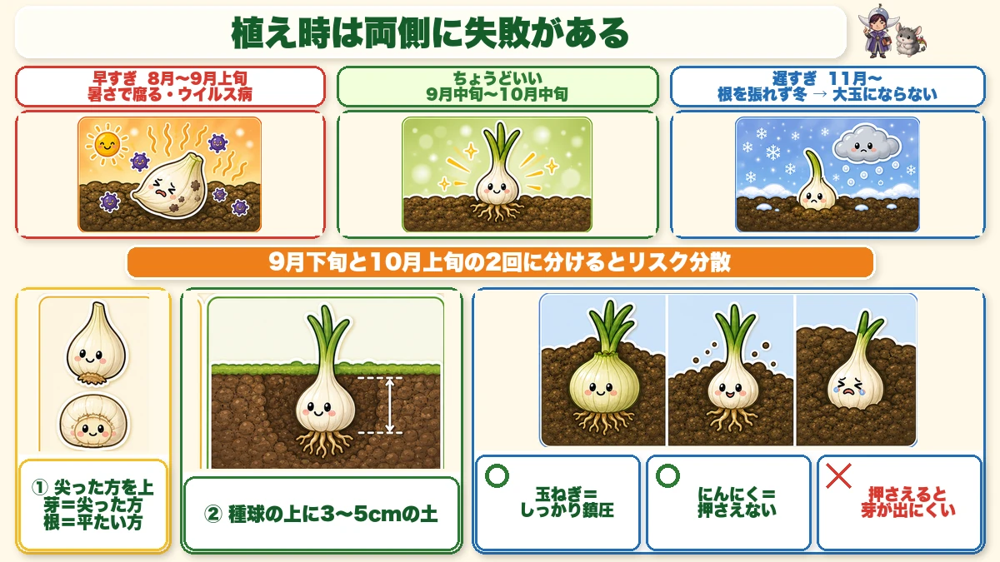
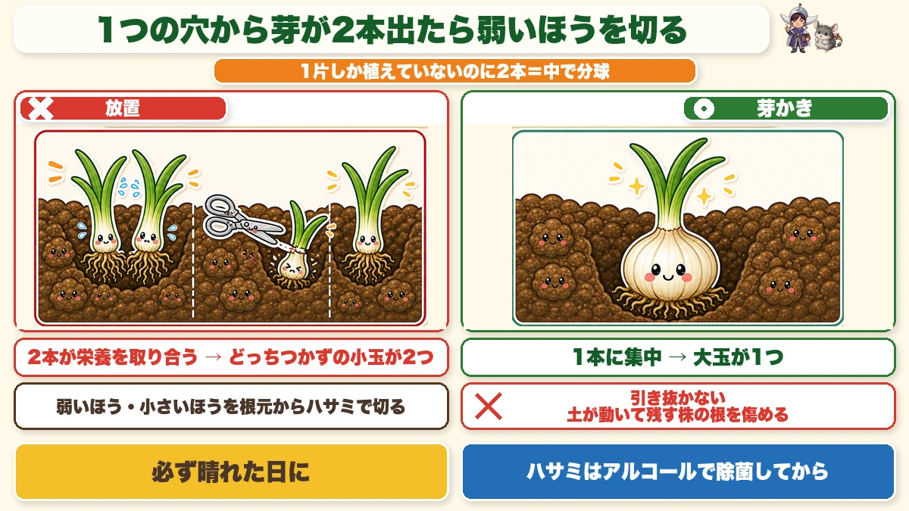
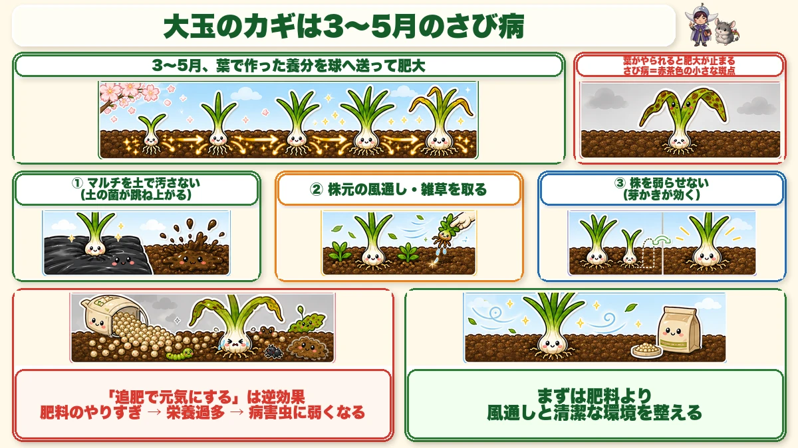
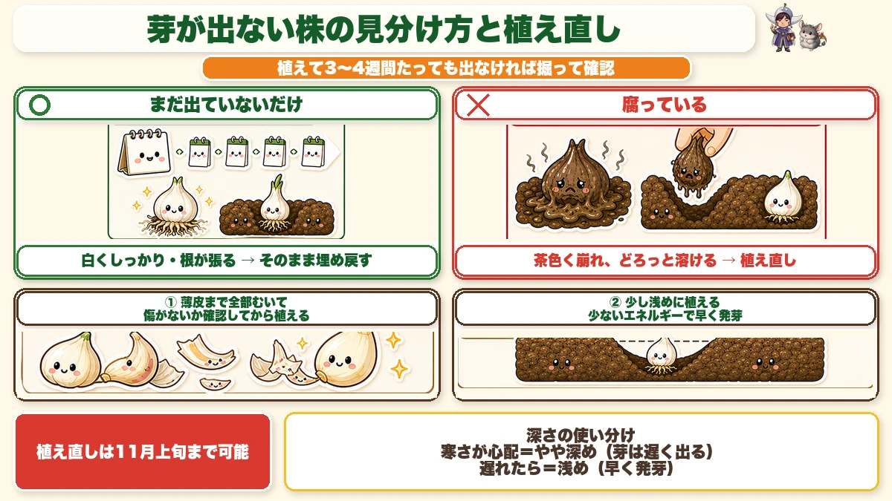
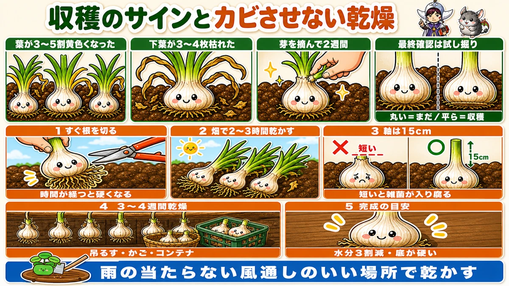

Two shoots from one clove? Cut one 🧄 The job that decides whether garlic gets big

🧄 "I heard you just plant it and leave it — mine came out tiny."
🧄 "Nothing came up at all."
🧄 "I harvested fine and then it went mouldy in storage."
Hello, I'm Eiko. Eight years of growing vegetables organically and without pesticides, and a teaching licence in science.
Garlic is described as "plant it and leave it", and that's essentially true. In the ground in autumn, out in early summer, ignored all winter.
And yet people still end up with small bulbs. The cause is usually this:
They've never heard of shoot-thinning, so they walk straight past it.
You plant one clove, and sometimes two or three shoots come out of that one hole. Left alone they compete for food and you get two indecisive little bulbs.
For my first few years I didn't know the job existed.
Nine tenths of it happens in the shop
Choose big bulbs to plant
Three things to look at:
- Large — big planting bulbs give big garlic
- A tight neck
- No damage or shrivelling
A few large bulbs beat a lot of cheap small ones. One clove becomes one bulb, so the size you start with is the size you get.
Prepare the soil 2–3 weeks ahead
Garlic dislikes acid soil. It wants pH 5.5–6.5.
Rainy climates drift acid, so lime if you have reason to:
- Dolomite lime — 100–150 g per m² (3–5 oz per yd²), at least two weeks before planting
- Organic lime (oyster shell) — 150–200 g per m², and you can plant straight after
Dolomite lime is strong, so leave the gap. If you're in a hurry, use the organic kind.
You can plant too early and too late

What this diagram says （図解の文字）
- There's a failure on either side of the planting window
- Too early — "rots in the heat; virus disease"
- About right — mid-September to mid-October (in central Japan)
- Too late — "goes into winter without rooting → never makes a big bulb"
- "Planting in two goes, a fortnight apart, spreads the risk"
Too early and it rots
Garlic is very cold-hardy and poor in heat. Planted while it's still warm, the clove rots in the ground, and virus disease can appear.
Autumns are warmer than they were, so don't plant to a fixed calendar date — wait until mornings and evenings have genuinely cooled.
Decide by temperature, not by feel
- When the daily maximum drops below 25 °C (77 °F)
- Or when soil temperature is around 20 °C (68 °F)
Either works as a trigger, and the forecast tells you.
Too late and it never gets big
Late, and it goes into winter without much root. Garlic roots through winter and swells fast in spring — without that foundation it can't finish.
I plant in two goes
To cover both risks, I plant about two weeks apart. A hot year favours the later batch, an early cold snap the earlier one. Whichever misses, you don't lose everything.
Two ways to recover a late year
1. Pre-chill in the fridge. Put the bulbs in the fridge about 20 days before planting. It breaks dormancy and shoots come faster. Commercial growers do this routinely.
2. Peel the cloves completely. The more skin you remove, the sooner the shoot appears, and growth afterwards is much the same.
Both are catch-up moves for a late year. In a normal year, plant as usual.
Three rules for planting
① Pointed end up, vertical
A clove has a pointed end and a flat end. Pointed is the shoot, flat is the root. Upside down, the shoot has to travel round through the soil. Stand it straight.
② 3–5 cm of soil over the clove
Depth has an effect: deeper means a later shoot, shallower means an earlier one — but too shallow and winter cold does damage. 3–5 cm (1½–2 in) is standard.
③ Don't firm the soil on top
This is the opposite of onions, so take care. With onions you firm the soil around the plant. With garlic, cover and leave it — don't press. Compacted soil makes it harder for the shoot to emerge.
Same family, different starting point: an onion is a plant with roots already; garlic is a bulb about to produce its first shoot.
Use mulch film
Weeds and growth, yes — but mainly drying. Garlic hates the soil drying out in winter, and film prevents much of it.
Useful to know: the same film spacing works for onions, so if you grow both you can reuse it.
Watering is basically unnecessary — only if there's no rain and the soil is dry, or if you want to hurry a shoot along.
Shoot-thinning — the main point of this article

What this diagram says （図解の文字）
- Two shoots from one hole? Cut the weaker one
- "Only one clove planted, yet two shoots = it has divided inside"
- Left alone — "the two compete for food → two indecisive small bulbs"
- Thinned — "everything goes to one → one big bulb"
- "Cut the weaker, smaller one off at the base with snips"
Once the shoots are up, walk the row and look at each plant.
Is anything showing two shoots from one hole? You planted one clove, so there should be one shoot. Two means that clove has divided inside.
Left alone, both end up mediocre
The same logic as thinning radishes. Two shoots in one spot compete, neither finishes, and you get two small bulbs.
I overlooked this for several years — noticed "there are two of those", and did nothing about it.
How
- Pick the weaker, smaller one
- Cut it off at the base with snips
Don't pull it. Pulling moves the soil and damages the roots of the one you're keeping — same thinking as thinning radishes.
Three shoots happens too. Keep the biggest and cut the rest.
Two rules that matter
- Only on a dry, sunny day
- Disinfect the snips with alcohol first
Garlic catches disease more easily than people expect, and pathogens enter through cuts. Done in the wet, the cut doesn't dry. Reused snips carry the last plant's infection.
The key to a big bulb is rust disease

What this diagram says （図解の文字）
- Big bulbs depend on rust in spring
- "In spring, the leaves send their reserves into the bulb and it swells"
- "Damage the leaves and the swelling stops"
- "Rust = small rust-brown spots"
- ① "keep the mulch free of soil" — "soil-borne spores splash up" ② "airflow around the plants"
What makes garlic big isn't the fertiliser. It's how well you hold off rust disease in spring.
Rust shows as small rust-brown spots on the leaves — the colour the name suggests.
Why it matters so much
Garlic swells in spring, sending the reserves the leaves make down into the bulb. Lose the leaves to rust in that window and the factory has stopped.
Conversely, hold rust off until close to harvest and the bulb keeps filling the whole time. That's how you get a big one.
Prevention is all of it
- Keep soil off the mulch film — soil-borne spores splash up onto the leaves
- Keep air moving around the plants — don't let weeds stand, including those coming through the planting holes
- Don't let the plant get run down — which is where shoot-thinning comes back in
The third is easily missed. A plant still splitting its resources between two shoots is depleting itself, and a depleted plant catches disease.
So shoot-thinning isn't only about size — it builds a plant that resists disease.
Feeding a weak plant backfires
"It's struggling, so I'll feed it" — with garlic that goes the wrong way. Overfeeding makes it very vulnerable to pests and disease, rather as overeating makes a person unwell.
Fix the conditions first: airflow, clean film, shoot-thinning. In that order.
Three things not to do in autumn
After planting, "nothing" is the correct action. The three temptations:
- Watering. However dry it looks, don't. Overwatering garlic causes disease, downy mildew especially
- Feeding. Too early. It's heading into dormancy — not growing is normal at this stage
- Ignoring a clove that hasn't come up. This one you do act on
When nothing comes up

What this diagram says （図解の文字）
- Telling the difference, and replanting
- "No shoot after 3–4 weeks? Dig it up and look"
- Just hasn't come yet — "white and firm, roots growing → cover it back up"
- Rotten — "brown, collapsing, slimy → replant"
If a clove hasn't shown after three or four weeks, dig it up and check. It'll be one of two things:
- ○ Just not up yet. The clove is firm and roots are growing. Cover it back up — it's coming. Give it up to a month
- ✗ Rotten. Collapsing or slimy. It won't recover. Replant
Replanting — two tricks
Peel the clove completely first. Normally you don't need to, but when replanting you do — so you can see damage or rot before you commit. There's no point replacing a rotten clove with another one. Culinary garlic works fine as a substitute, peeled and inspected the same way.
And plant it slightly shallower than the usual 3–5 cm. Shallower means less energy spent reaching the surface, so the shoot comes sooner — which is what you want when you're behind.
Depth, summarised: worried about cold → slightly deeper (and a later shoot); behind and want a fast shoot → shallower.
Harvest, and drying it without mould

What this diagram says （図解の文字）
- Harvest signs, and drying without mould
- "30–50 % of the leaves yellow" ／ "3–4 lower leaves dead" ／ "two weeks since you removed the flower stalk"
- "Final check: lift one" — "rounded = not yet; flat = ready"
- 1 "cut the roots straight away" — "they harden with time" 2 "dry in the plot for 2–3 hours"
Three signs
- 30–50 % of the leaves have yellowed
- Three or four lower leaves have died
- About two weeks since you removed the flower stalk
And the final check: lift one. If the base of the bulb is flat, it's ready; still rounded, leave it.
If disease has started, harvest early rather than waiting — persisting only makes it worse. Same as onions.
Choose a day after a dry spell, with dry soil.
Drying — where the mould is decided
The real work starts after lifting. Nothing is more annoying than growing it well and losing it in storage.
- Cut the roots off immediately. They harden with time; straight after lifting they cut easily
- Leave them in the plot for 2–3 hours
- Cut the stem to about 15 cm (6 in). Don't cut short at this stage — bacteria enter the cut and it rots. The 15 cm is that margin
- Dry for another 3–4 weeks, tied and hung, or in a basket, somewhere airy and out of the rain
- Done when about 30 % of the water has gone and the base of the bulb is hard — press it and it should feel solid
- Finish: cut the stem short, clean off the loose skin, and store in a net
Done properly it keeps until the following spring — and the bulbs you hold back become next season's planting stock.
Science bit: a clove is a leaf wrapped round a bud 🧄🔬
Peel a clove and you get a solid white mass. That isn't a fruit. Inside is a single small bud, wrapped in a thick leaf full of stored food.
An onion bulb is the swollen base of its leaves; garlic, being a relative, is built the same way:
- The flat part at the bottom — the true stem, where the roots come from
- The cloves arranged above it — a bud, and the food-storing leaf wrapped round it
- The green part above — leaves
Because each clove contains a bud, one clove makes one plant — and the leaf around it holds all the food needed to launch it. A packed lunch for the journey.
Garlic doesn't reproduce by seed
Most vegetables flower and set seed. Garlic in cultivation flowers but rarely sets seed, so it multiplies every year by dividing off part of its own body.
Which means the garlic in your plot is all clones — the parent's characteristics carried forward, unchanged, year after year.
To sum up
- ✅ Plant when the maximum drops below 25 °C. Too early rots, too late stays small
- ✅ Buy big bulbs — one clove becomes one bulb
- ✅ pH 5.5–6.5. Dolomite lime two weeks ahead, organic lime any time
- ✅ Pointed end up, 3–5 cm of soil, and don't firm it (the opposite of onions)
- ✅ Two shoots? Cut the weaker at the base — dry day, disinfected snips
- ✅ Big bulbs depend on holding off rust in spring. Clean film, airflow, no run-down plants
- ✅ Feeding a weak plant backfires
- ✅ Autumn: no water, no feed — but dig up anything that hasn't come after 3–4 weeks
- ✅ Harvest when the base of the bulb is flat
- ✅ Cut the roots at once, stem to 15 cm, dry 3–4 weeks. Cutting short too early lets rot in
- ✅ A clove is a bud wrapped in a food-storing leaf, and garlic is a clone
You don't have to do all of it. Next time you're at the plot, just look for a hole with two shoots in it. Cutting one makes next year's garlic a size bigger 🧄
Thank you for reading!